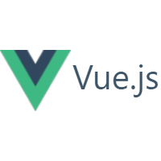

Install JavaScript frameworks on Windows
This guide will help you get started using JavaScript frameworks on Windows, including Node.js, React.js, Vue.js, Next.js, Nuxt.js, or Gatsby.
Choose a JavaScript framework to install and set up your dev environment
Node.js overview
Learn about what you can do with Node.js and how to set up a Node.js development environment.
React overview
Learn about what you can do with React and how to set up a React development environment.

Vue.js overview
Learn about what you can do with Vue.js and how to set up a Vue.js development environment.
Install Next.js on WSL
Next.js is a framework for creating server-rendered JavaScript apps based on React.js, Node.js, Webpack and Babel.js. Learn how to install it on the Windows Subsystem for Linux.
Install Nuxt.js on WSL
Nuxt.js is a framework for creating server-rendered JavaScript apps based on Vue.js, Node.js, Webpack and Babel.js. Learn how to install it on the Windows Subsystem for Linux.
Install Gatsby on WSL
Gatsby is a static site generator framework based on React.js. Learn how to install it on the Windows Subsystem for Linux.